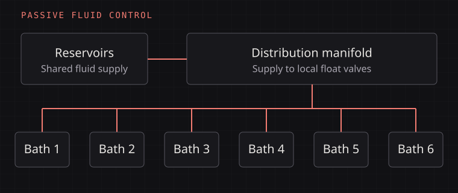

Medtronic Aortic / Laboratory automation
Automated Laboratory Refill.
A seven-system DI-water refill design, verified on six frames for 10 days with no manual refills, leaks, interruptions, or adjustments.

Engineering problem
Each active fatigue-test system required a separate daily DI-water refill. A holiday shutdown created a requirement for seven to nine days of unattended operation, while maintaining fluid levels and limiting the consequence of a loose connection.
The challenge was to support continuous testing across seven systems without connecting the laboratory to an unlimited water supply.
My contribution
I owned concept selection, the approximately $100 bill of materials, component sourcing, assembly, integration, feasibility testing, endurance verification, and technician handoff.
A senior engineer approved the approach, and the fatigue-lab manager and technicians reviewed operation and risk. I trained technicians on reservoir filling, connections, float-valve checks, and reuse for future studies.
Technical approach
Size the solution around the requirement
Used an evaporation feasibility study to inform reservoir capacity for the seven-to-nine-day unattended requirement.
Compare the consequences of each option
Considered commercial refill hardware, a direct laboratory-water connection, and finite standalone reservoirs. The selected design balanced cost, capacity, and a bounded water supply.
| Option | Engineering tradeoff |
|---|---|
| Commercial refill hardware | Integrated solution with a higher total component cost across seven systems. |
| Direct lab-water connection | Continuous supply, but a loose fitting could continue releasing water. |
| Finite reservoirs — selected | Limited the available spill volume and supported a shared refill architecture at approximately $100 in components; required custom integration and verification. |
Integrate the fluid-handling components
Connected two finite reservoirs to three- and four-outlet manifolds, tubing, quick-disconnect fittings, and local float valves. The valves opened as the fluid level dropped, providing a passive refill mechanism with connections for seven systems.
Verify simultaneous operation
Ran all six functional frames simultaneously for 10 continuous days. Acceptance required no manual refill, leak, test interruption, or adjustment. The seventh frame was excluded because it was under repair.
Result
6 frames · 10 continuous days
zero manual refills, leaks, interruptions, or adjustments
The endurance trial exceeded the seven-to-nine-day unattended requirement on the six functional frames. The design provided connections for seven systems at an approximately $100 component bill of materials.
Calculated operational impact
At one manual refill per active frame per day, the trial avoided approximately 60 expected refill events (6 frames × 10 days). At full seven-frame availability, the process could remove up to 49 refill events per week (7 frames × 7 days).
The refill-event totals are calculated estimates from the operating schedule, not separately measured outputs. Endurance evidence covers six frames; seven-system capacity was designed but was not demonstrated in this trial.
Lessons learned
Bound the consequence of failure. A finite reservoir met the unattended-operation requirement while limiting the water available if a fitting came loose.
System capacity and verification coverage are different claims: the architecture supported seven connections, while the endurance evidence covered six operational frames. Clear acceptance criteria and technician training made the result useful beyond a single engineering trial.
Continue exploring
Instrumented Fatigue Testing